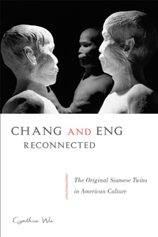

Considering Chang and Eng's body in America from the nineteenth century to the present
Considering Chang and Eng's body in America from the nineteenth century to the present


 Considering Chang and Eng's body in America from the nineteenth century to the present
Considering Chang and Eng's body in America from the nineteenth century to the present

|  |
Chang and Eng ReconnectedThe Original Siamese Twins in American CultureCynthia Wupaper EAN: 978-1-43990-869-3 (ISBN: 1-4399-0869-9) |
"Chang and Eng Reconnected is a gem with sharp, original, and unexpected twists. What is refreshingly absent here is the traditional use of Chang and Eng as evidence towards the cultural fascination with bodily deformity and the sideshow. This is not a biography; rather, Wu’s book turns the tables on American culture by questioning its investment in specific forms of voyeurism. Engaging conjoinment as metaphor, Wu originally reframes Chang and Eng as a site where cultural anxieties about the nature of personhood, individuation, national unity, and normativity are worked out. Chang and Eng Reconnected is complex and sophisticated, yet also exceedingly lucid."
—Leslie Bow, Professor of English and Asian American Studies at the University of Wisconsin, Madison, and author of ‘Partly Colored’: Asian Americans and Racial Anomaly in the Segregated South
Conjoined twins Chang and Eng Bunker have fascinated the world since the nineteenth century. In her captivating book, Chang and Eng Reconnected, Cynthia Wu traces the "Original Siamese Twins" through the terrain of American culture, showing how their inseparability underscored tensions between individuality and collectivity in the American popular imagination.
Using letters, medical documents and exhibits, literature, art, film, and family lore, Wu provides a trans-historical analysis that presents the Bunkers as both a material presence and as metaphor. She also shows how the twins figure in representations of race, disability, and science in fictional narratives about nation building.
As astute entrepreneurs, the twins managed their own lives; nonetheless, as Chang and Eng Reconnected shows, American culture has always viewed them through the multiple lenses of difference.
Excerpt available at www.temple.edu/tempress
"The fascinating story of the Bunkers has an excellent framework in Chang and Eng Reconnected. Wu’s creative, incisive approach to the Bunkers’ story uses the twins as a lens for exploring how imagined communities form around an imagined body (or bodies) marvelously suited both to expose and to conceal social contradictions. Wu’s far-reaching and often brilliant analysis intertwines Asian Americanist and disability studies approaches to focus attention on forms of political representation in/of the United States. The discussion of the autopsy and of cultural understandings of the twins’ connecting band and of Eng’s death is fascinating. The analyses of contemporary art, film and writing are all very well done, and they distinguish this book’s approach from the generally more narrowly historically focused work on the Bunkers."
—Susan Schweik, Professor of English at the University of California, Berkeley, and author of The Ugly Laws: Disability in Public
"Wu's excellent study is supplemented by a detailed analysis of the metaphors represented by conjoined twins.... [Chang and Eng Reconnected is] full of fascinating details unearthed by Wu's thorough research -- not just about the Bunkers, but about the social treatment and subsequent fate of 'freaks' generally."
—Fortean Times
"Given the amount of time and archival material the book covers, it is a credit to Wu's ability as a writer that she leads readers seamlessly from beginning to end.... Wu's nuanced reading of embodiment provides a way of conceptualizing and analyzing disability diaspora."
—Disability Studies Quarterly
"Chang and Eng Reconnected is carefully researched and theoretically rich, an essential volume for scholars interested in the construction of US national identity, the history and culture of Asian America, and the social construction and multivalent meanings of bodily difference. Wu is an admirably restrained writer, offering detailed interpretations of the cultural objects she examines without making grand claims for their significance as theoretical interventions.... Wu’s prose is lucid, elegant, and concise, so that despite the complexity of the material, the book will be suitable for undergraduate classes in disability studies, Asian American studies, and American studies, even as it proves an invaluable source for specialists in all three fields."
—MELUS
"Cynthia Wu has written a brilliant book. It is not only enjoyable to read while revealing new insights and interpretations on the particular case of Chang and Eng Bunker, but it also challenges academic disciplinary perceptions in innovative ways. Scholars of disability studies, Asian American studies, transnational studies, anthropology and cultural analysis, as well as those interested in literature, film, law, museums, and art, will benefit from the book."
—H-Net
"[A]n in-depth study of not only the social context in which they lived but also the lasting effect their joined image had on the American imagination.... Wu sets out in this insightful book to introduce the reader to the twins not only as racial and physical anomalies but as inhabitants of the nineteenth century, objects of sideshow spectacles, and as fathers and husbands in the rural South. Through the careful analysis of literary and artistic works, she demonstrates the continuing significance of Chang and Eng to the ever-changing American culture."
—The Register of the Kentucky Historical Society
"Chang and Eng Reconnected productively navigates between examining the representation of disability and recuperating the experience of people with disabilities.... The book is attentive to the political contexts, such as the problem of connection and separation, of individualism and collectivity characteristic of US national development in the nineteenth century. It is attentive, also, to issues of 'class advantage' and racialization."
—American Quarterly
"Chang and Eng Reconnected is the most comprehensive engagement between North American Disability Studies and Asian American Studies to date. Using the example of Chang and Eng Bunker, Wu explores the ways in which disability and race/ethnicity are mutually constitutive. Even the term most commonly used to describe Chang and Eng Bunker – the original ‘Siamese twins’ – connotes both a disability and racialized identity.... Chang and Eng Reconnected is a breakthrough in disability studies in terms of its sophisticated engagement with Asian American literature and perspectives. Wu’s book will surely influence many scholars in their analyses of race, ethnicity, sexuality, and disability."
— Disability & Society
"[This book] offers a fresh and novel approach and contribution to the study of Chang and Eng Bunker, as many of the studies on the twins are historical.... Wu’s book is erudite and intricately argued as much as it is highly readable, and her study innovatively breaks ground for ways to rethink race, gender/sexuality, and disability studies."
— ournal of Asian American Studies
"[Wu's] critical method, and impressive collection of literary, cultural, and social sources, reveals an original and interdisciplinary approach to American studies scholarship.... This broad interdisciplinarity can yield fascinating results: Wu’s anthropological analysis of the Bunker reunions reveals the complex affective bonds that connect dozens of Chang and Eng’s descendants with their 'esteemed ancestors.'”
— Canadian Review of American Studies
List of Figures
Acknowledgments
Introduction
Part I: Locating Material Traces in the Archives
1. Labor and Ownership in the American South
2. The Mystery of Their Union
3. Strange Incursions into Medical Science at the Mütter Museum
Part II: Reading Literature and Visual Cultures
4. Late-Nineteenth-Century Visions of Conflict and Consensus
5. Asian Americans Bare/Bear the Hyphen
6. Disciplining and Normalizing the Woman Subject in Contemporary Literature and Film
Part III: Observing and Participating
7. Our Esteemed Ancestors
Epilogue: Alone or Together?
Notes
Index
Cynthia Wu is Assistant Professor of American Studies at the University at Buffalo.
American Studies
Asian American Studies
Disability Studies
© 2016 Temple University. All Rights Reserved. This page: http://www.temple.edu/tempress/titles/2206_reg.html.